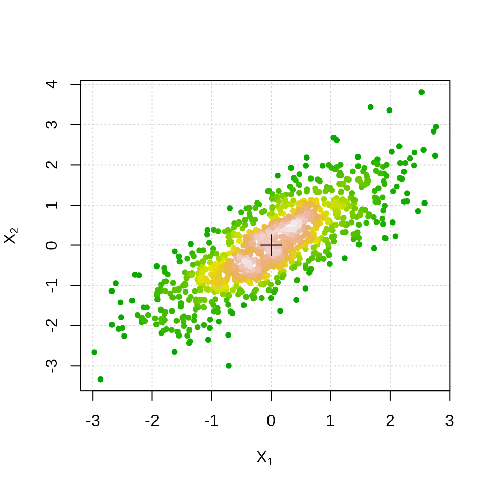
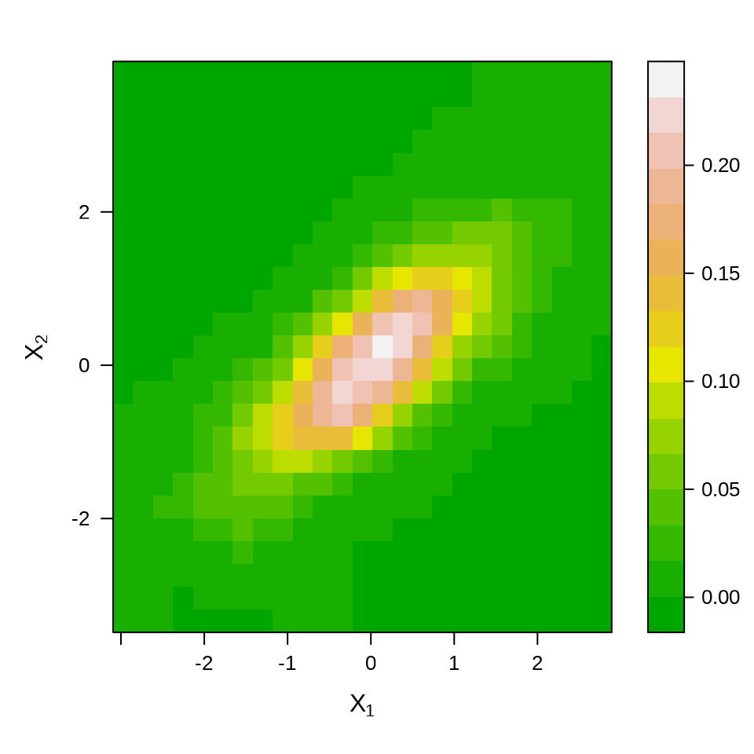
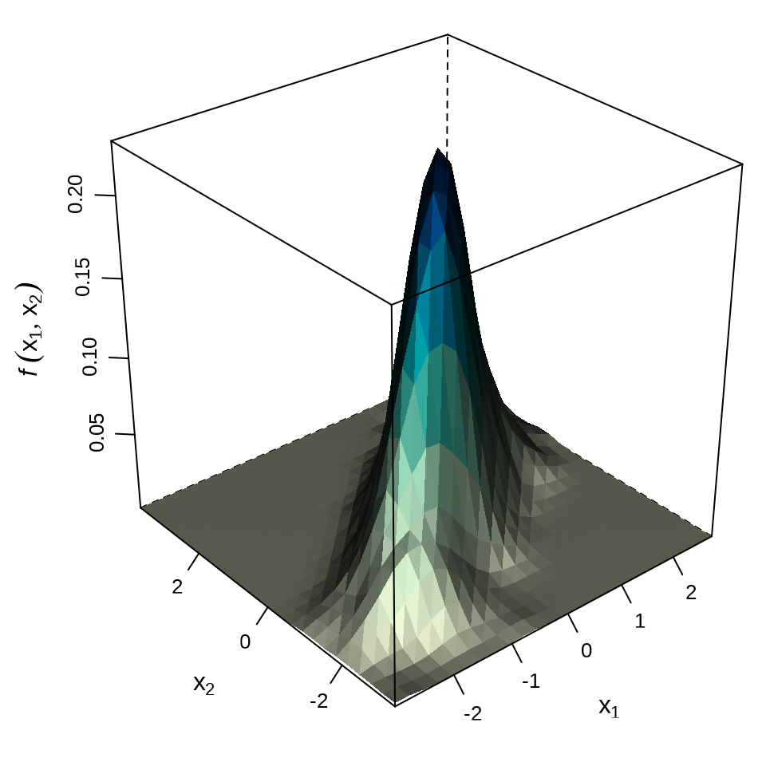

13 常见的统计分布
三大抽样分布 t 分布，\(\chi^2\) 分布和 F 分布，一元和多元情形，一元分布知识范围是本科，多元分布范围是研究生和博士。一元分布多用于本科假设检验，多元分布常用于均值向量和协方差阵以及统计量的极限分布。
13.1 正态分布
- 公式：期望、方差
- 图像：密度分布、累积分布
- 模拟：随机数、分位点、积分、期望、方差
13.1.1 一元情形
13.1.2 多元情形
多元正态分布函数 (MVN)
\[ \Phi(\mathbf{a},\mathbf{b},\Sigma)=\frac{1}{\sqrt{|\Sigma|(2\pi)^m}} \int_{a_1}^{b_1}\!\int_{a_2}^{b_2}\!\cdots\!\int_{a_m}^{b_m} e^{-\frac{1}{2}x^\top\Sigma^{-1}x}dx \]
其中 \(x = (x_1,x_2,\dots,x_m)^\top, \forall i, -\infty \le a_i \le b_i \le \infty\)， \(\Sigma\) 是 \(m \times m\) 对称非负定的矩阵
下面使用 MASS 包的 mvrnorm() 函数模拟一组抽取自多元正态分布的样本。
二维正态分布的图像见下图，分别是散点图、栅格图和三维透视图
代码
# 散点图
plot(X,
pch = 20, panel.first = grid(), cex = 1,
col = densCols(X, colramp = terrain.colors),
xlab = expression(X[1]), ylab = expression(X[2])
)
points(x = 0, y = 0, pch = 3, cex = 2)
# 栅格图
f1 <- kde2d(X[, 1], X[, 2], n = 25)
df <- data.frame(expand.grid(x = f1$x, y = f1$y), z = as.vector(f1$z))
library(lattice)
levelplot(
z ~ x * y,
data = df,
col.regions = terrain.colors,
xlab = expression(X[1]),
ylab = expression(X[2]),
scales = list(
draw = TRUE, # 坐标轴刻度
# 去掉图形上边、右边多余的刻度线
x = list(alternating = 1, tck = c(1, 0)),
y = list(alternating = 1, tck = c(1, 0))
)
)
# 透视图
wireframe(
data = df, z ~ x * y, shade = TRUE, drape = FALSE,
xlab = expression(x[1]), ylab = expression(x[2]),
zlab = list(expression(italic(f) ~ group("(", list(x[1], x[2]), ")")), rot = 90),
scales = list(arrows = FALSE, col = "black", z = list(rot = 90)),
# 减少三维图形的边空
lattice.options = list(
layout.widths = list(
left.padding = list(x = -0.5, units = "inches"),
right.padding = list(x = -1.0, units = "inches")
),
layout.heights = list(
bottom.padding = list(x = -1.5, units = "inches"),
top.padding = list(x = -1.5, units = "inches")
)
),
par.settings = list(
axis.line = list(col = "transparent")
)
)


mvtnorm 包的函数 pmvnorm() 计算多元正态分布的概率 ，这个例子来自链接
13.2 t 分布
13.2.1 一元情形
13.2.2 多元情形
多元 t 分布函数 (MVT)
\[ T(\mathbf{a},\mathbf{b},\Sigma,\nu)=\frac{2^{1-\frac{\nu}{2}}}{\Gamma(\frac{\nu}{2}) } \int_{0}^{\infty} s^{\nu-1}e^{-\frac{s^2}{2}} \Phi(\frac{s\mathbf{a}}{\sqrt{\nu}},\frac{s\mathbf{b}}{\sqrt{\nu}},\Sigma)ds \]
多元 \(t\) 分布分位数计算
library(mvtnorm)
n <- c(26, 24, 20, 33, 32)
V <- diag(1 / n)
df <- 130
C <- matrix(c(
1, 1, 1, 0, 0, -1, 0, 0, 1, 0,
0, -1, 0, 0, 1, 0, 0, 0, -1, -1,
0, 0, -1, 0, 0
), ncol = 5)
cv <- C %*% V %*% t(C) ## covariance matrix
dv <- t(1 / sqrt(diag(cv)))
cr <- cv * (t(dv) %*% dv) ## correlation matrix
delta <- rep(0, 5)
Tn <- qmvt(0.95,
df = df, delta = delta, corr = cr,
abseps = 0.0001, maxpts = 100000, tail = "both"
)
Tn#> $quantile
#> [1] 2.560766
#>
#> $f.quantile
#> [1] 1.922688e-07
#>
#> attr(,"message")
#> [1] "Normal Completion"13.3 F 分布
F 分布 R. A. Fisher
13.3.1 一元情形
13.3.2 多元情形
13.4 卡方分布
卡方分布 \(\chi^2\) Karl Person
13.4.1 一元情形
13.4.2 多元情形
13.5 威沙特分布
Wishart 分布
Theodore W. Anderson 的博士论文研究非中心的 Wishart 分布，以 Wishart（威沙特）分布的构造过程串一串统计分布的情况，比如和 \(\chi^2\) 分布的关系。Wishart 分布的表示和构造借助 Cholesky 分解
13.6 霍特林分布
霍特林分布 \(T^2\)